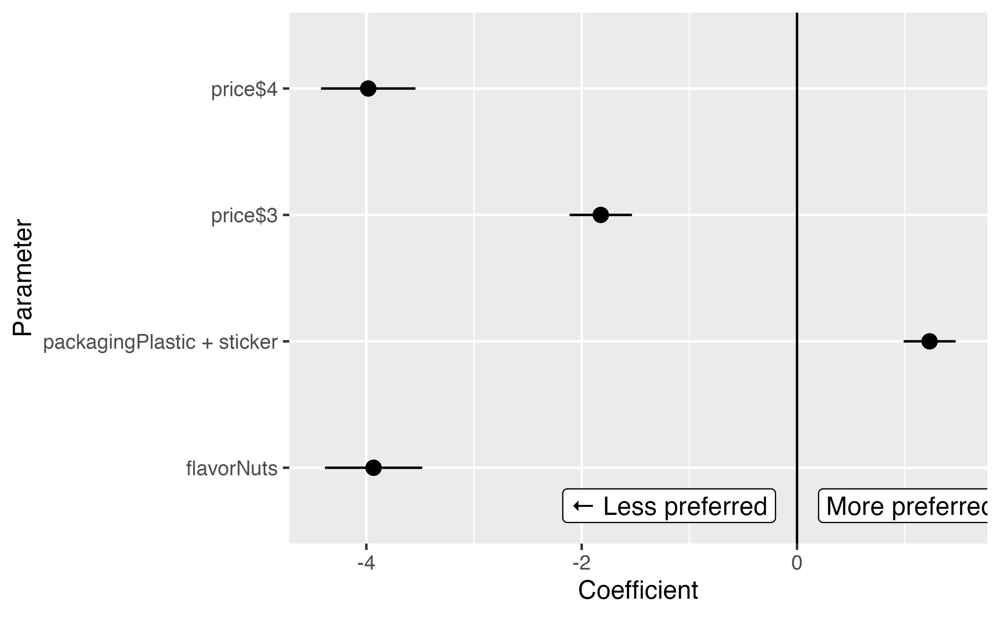
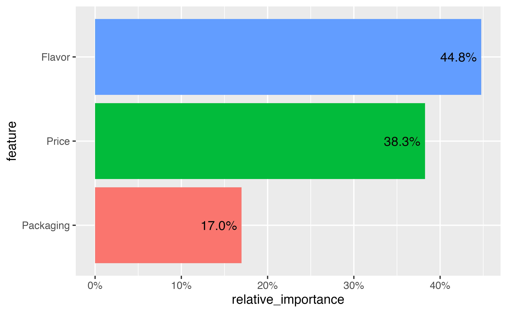
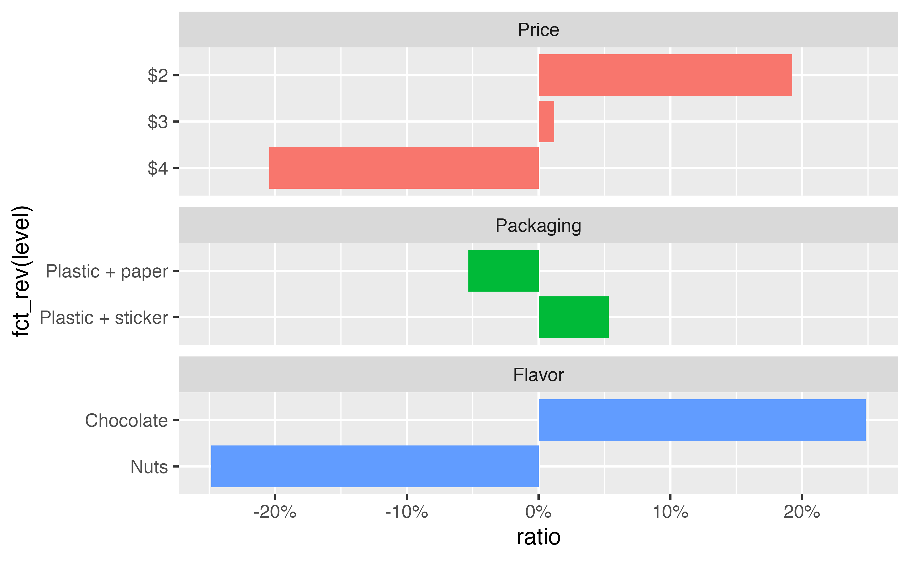

library(tidyverse)
library(mlogit)
library(marginaleffects)
library(parameters)
library(tinytable)
library(scales)
library(ggforce)
stickers <- readRDS("data/processed_data/study_5_sticker.rds")
stickers_indexed <- stickers |>
group_by(resp_id, question) |>
mutate(choice_id = cur_group_id()) |>
ungroup() |>
as.data.frame() |> # mlogit() complains and breaks when working with tibbles :(
dfidx(
idx = list(c("choice_id", "resp_id"), "alt"),
choice = "choice",
shape = "long"
)3 Descriptive estimands
Utilities, predictions, and simulations
model_mlogit <- mlogit(
choice ~ 0 + price + packaging + flavor,
data = stickers_indexed
)
pars_random <- rep("n", length(model_mlogit$coefficients)) |>
setNames(names(model_mlogit$coef))
model_mlogit_hierarchical <- mlogit(
choice ~ 0 + price + packaging + flavor,
rpar = pars_random, panel = TRUE, correlation = TRUE,
data = stickers_indexed
)3.1 Population-level stuff
3.1.1 Model βs
| Parameter | Coefficient | SE | CI_low | CI_high | z | p |
|---|---|---|---|---|---|---|
| price$3 | -1.82 | 0.15 | -2.11 | -1.53 | -12.33 | <0.001 |
| price$4 | -3.98 | 0.22 | -4.42 | -3.54 | -17.79 | <0.001 |
| packagingPlastic + sticker | 1.23 | 0.12 | 0.99 | 1.47 | 10.00 | <0.001 |
| flavorNuts | -3.93 | 0.23 | -4.38 | -3.48 | -17.06 | <0.001 |

3.2 Individual-level stuff: Part-worth utilities and ratios
| Price | Packaging | Flavor | |||||
|---|---|---|---|---|---|---|---|
| ID | $2 | $3 | $4 | Paper | Sticker | Chocolate | Nuts |
| 4 | 0 | -2.22 | -3.98 | 0 | -4.24 | 0 | -9.76 |
| 5 | 0 | -2.55 | -5.99 | 0 | -0.19 | 0 | -0.14 |
| 6 | 0 | -1.31 | -2.87 | 0 | 2.67 | 0 | -8.60 |
| 7 | 0 | -1.61 | -3.34 | 0 | 2.63 | 0 | -6.78 |
| 8 | 0 | -1.57 | -3.71 | 0 | 3.49 | 0 | -4.41 |
For respondent 4, the difference in preference when moving from $2 to $4 is roughly the same as the preference for a sticker
We can also calculate the relative importance of each attribute for each individual by determining how much each attribute contributes to the overall utility of the choice. We first calculate the range of each
`summarise()` has grouped output by 'id'. You can override using the `.groups` argument.| Feature | max(βi) − min(βi) | Range | Importance |
|---|---|---|---|
| Price | 0 − -3.98 | 3.98 | 22.1% |
| Packaging | 0 − -4.24 | 4.24 | 23.6% |
| Flavor | 0 − -9.76 | 9.76 | 54.3% |
| Total | 17.99 | 100.0% |
| Range | Importance | |||||
|---|---|---|---|---|---|---|
| ID | Price | Packaging | Flavor | Price | Packaging | Flavor |
| 4 | 3.98 | 4.24 | 9.76 | 22.1% | 23.6% | 54.3% |
| 5 | 5.99 | 0.19 | 0.14 | 94.7% | 3.1% | 2.2% |
| 6 | 2.87 | 2.67 | 8.60 | 20.3% | 18.9% | 60.8% |
| 7 | 3.34 | 2.63 | 6.78 | 26.2% | 20.6% | 53.2% |
| 8 | 3.71 | 3.49 | 4.41 | 32.0% | 30.0% | 38.0% |

`summarise()` has grouped output by 'feature'. You can override using the `.groups` argument.
cor.mlogit(model_mlogit_hierarchical) |>
as_tibble(rownames = "coefficient") |>
tt() |>
format_tt(j = 2:5, fn = scales::label_number(accuracy = 0.001))| coefficient | price$3 | price$4 | packagingPlastic + sticker | flavorNuts |
|---|---|---|---|---|
| price$3 | 1.000 | 0.899 | 0.727 | 0.069 |
| price$4 | 0.899 | 1.000 | 0.529 | 0.132 |
| packagingPlastic + sticker | 0.727 | 0.529 | 1.000 | 0.240 |
| flavorNuts | 0.069 | 0.132 | 0.240 | 1.000 |